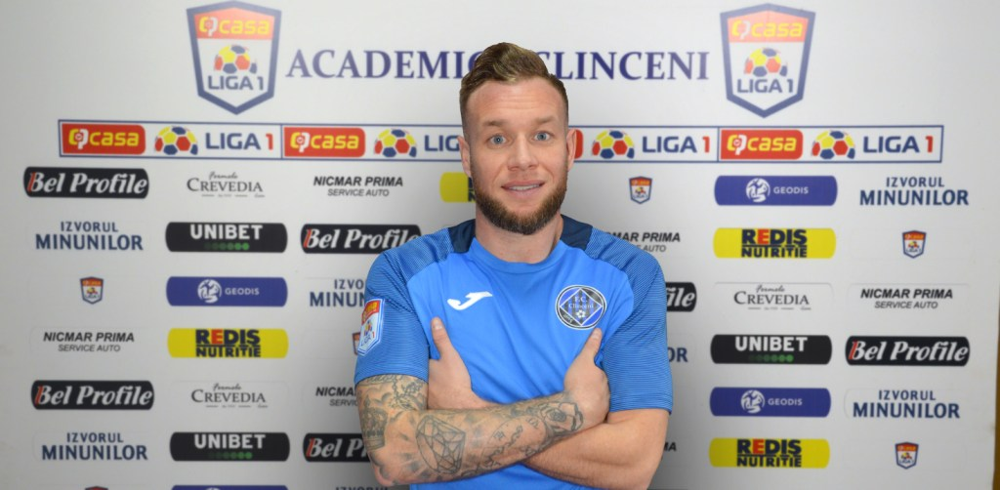

THIBAULT MOULIN, LA ACADEMICA CLINCENI IANUARIE 21, 2021
Academica Clinceni a ajuns la o înţelegere cu mijlocaşul Thibault Moulin.
În vârstă de 31 de ani, francezul are în palmares două titluri de campion cu Legia Varşovia şi încă două trofee ale Cupei Poloniei, respectiv Cupei Greciei cu PAOK. Thibault Moulin a jucat în cariera sa la Caen, Chateauroux, Clermont, Waasland-Beveren,
Legia Varşovia, PAOK, Ankaragucu şi Xanthi. Alături de Legia Varşovia a jucat în Champions League unde a reuşit să şi marcheze. A înscris golul de de 3-2 în partida Legia – Real Madrid (3-3). Thibault Moulin a semnat cu Academica Clinceni
un contract valabil până la finalul sezonului, cu opțiune pentru încă un an.